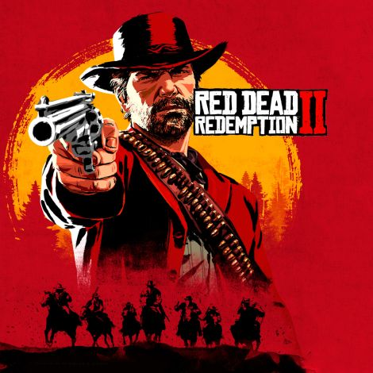

Genre: Actionäventyrsspel.
 Maj år 1899 den vilda västerns tid börjar ta slut eftersom regeringen börjar ta kontroll över dom laglösa områdena. När dom inser att deras förmögenhet börjar blekna så bestämmer sig Van der linde ligan att göra ett sista stort bankrån som skulle ge dom förmögenhet för livet. Men efter att rånet gick fel i staden Blackwater så tvingas Arthur Morgan och Dutch van der linde och hans liga fly. Med polisen och dom bästa prisjägarna efter sig måste ligan råna, stjäla och kämpa sig över Amerika för att överleva och att undvika att ligan splittras.
Genre: Realtidsstrategispel.
Age of Empires utspelar sig i början av den mänskliga civilisation och man kan spela olika folkslag som t.ex. Egyptierna, Sumererna och Grekerna. Spelet är ett klassiskt historiskt realtidsstrategispel där man bygger upp sin civilisation genom fyra åldrar: stone age, tool age, bronze age och iron age.